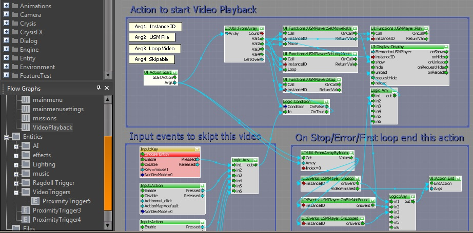
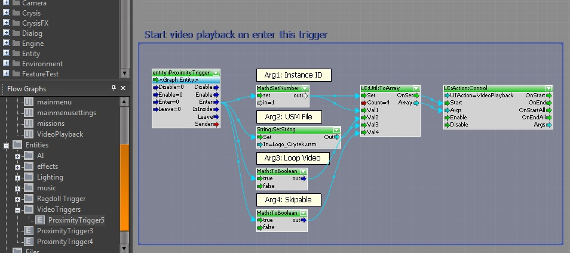

Обзор
Вот пример системы UIAction, используемой для отображения видеофайла USM:

Это действие можно использовать, например, для воспроизведения фильма при вводе триггера близости:

Вот пример системы UIAction, используемой для отображения видеофайла USM:

Это действие можно использовать, например, для воспроизведения фильма при вводе триггера близости:
